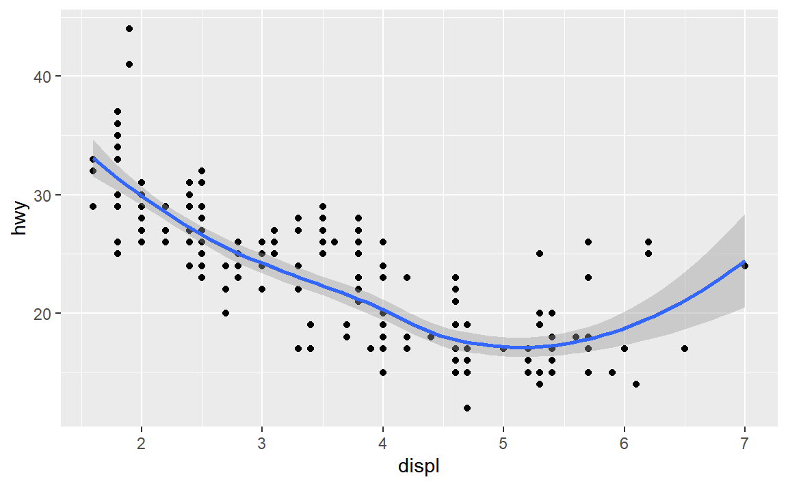

library(tidyverse)
## Warning: package 'tidyverse' was built under R version 4.2.3
## Warning: package 'ggplot2' was built under R version 4.2.3
## Warning: package 'tibble' was built under R version 4.2.3
## Warning: package 'tidyr' was built under R version 4.2.3
## Warning: package 'purrr' was built under R version 4.2.3
## Warning: package 'dplyr' was built under R version 4.2.3
## Warning: package 'stringr' was built under R version 4.2.3
## Warning: package 'forcats' was built under R version 4.2.3
## Warning: package 'lubridate' was built under R version 4.2.3
## ── Attaching core tidyverse packages ──────────────────────── tidyverse 2.0.0 ──
## ✔ dplyr 1.1.4 ✔ readr 2.1.5
## ✔ forcats 1.0.0 ✔ stringr 1.5.1
## ✔ ggplot2 3.4.4 ✔ tibble 3.2.1
## ✔ lubridate 1.9.3 ✔ tidyr 1.3.0
## ✔ purrr 1.0.2
## ── Conflicts ────────────────────────────────────────── tidyverse_conflicts() ──
## ✖ dplyr::filter() masks stats::filter()
## ✖ dplyr::lag() masks stats::lag()
## ℹ Use the conflicted package (<http://conflicted.r-lib.org/>) to force all conflicts to become errorsMaking cleaner, nicer R Markdown output
advice
Hi everyone!
With mini project 1 coming up, I have a bunch of helpful tips to make sure your documents look as nice and readable as possible. Here we go!
Knit often
Don’t wait until you’ve finished typing your entire document before knitting. Knit to HTML occasionally to make sure all your code runs from a fresh session and to make sure all the extra warnings and messages and any other strange output is taken care of.
Even if your final document won’t be an HTML file, I recommend knitting to HTML often because (1) it’s fast and (2) you can see the output in an easily-refreshable web browser immediately. When you knit to PDF, you have to wait a few extra seconds for LaTeX to compile the rendered Markdown file into PDF, and then you have to reopen the PDF file if you had it open previously. When you knit to Word, if you have a previous version of the .docx file open already, your computer will get mad (especially on Windows), so you have to remember to always close the knitted document in Word before reknitting it, and that’s annoying and you’ll inevitably forget.
So knit to HTML often. Then at the end, once you know everything is working right and the document looks nice and clean, knit to PDF or Word or whatever your final output will be.
Check that your text looks okay
When knitting, you should also check your text to make sure it looks okay. Here are some common issues that you’ll see with your text:
Headings that aren’t headings
Often you’ll want to make a heading for one of your sections and you’ll type this:
#Task 1: ReflectionWhen you knit that, though, it’ll look like this:
#Task 1: Reflection
That’s not a heading—that’s just a regular paragraph. For a #-style heading to turn into an actual heading, you need a space after the # and an empty line after the heading text:
# Task 1: Reflection
Some text
## A subheading
Some more textParagraphs that aren’t paragraphs
You’re used to indenting paragraphs in Word or Google Docs. First-line indentation is a normal thing with word processors.
Indenting lines is unnecessary with Markdown and will mess up your text.
For example, let’s say you type something like this:
It was the best of times, it was the worst of times, it was the age of
wisdom, it was the age of foolishness, it was the epoch of belief, it was the
epoch of incredulity, it was the season of Light, it was the season of Darkness,
it was the spring of hope, it was the winter of despair, we had everything
before us, we had nothing before us, we were all going direct to Heaven, we were
all going direct the other way—in short, the period was so far like the present
period, that some of its noisiest authorities insisted on its being received,
for good or for evil, in the superlative degree of comparison only.
There were a king with a large jaw and a queen with a plain face, on the
throne of England; there were a king with a large jaw and a queen with a fair
face, on the throne of France. In both countries it was clearer than crystal to
the lords of the State preserves of loaves and fishes, that things in general
were settled for ever. That looks like Word-style text, with indented paragraphs. When you knit it, though, it’ll turn into code-formatted monospaced text that runs off the edge of the page:
It was the best of times, it was the worst of times, it was the age of wisdom, it was the age of foolishness, it was the epoch of belief, it was the epoch of incredulity, it was the season of Light, it was the season of Darkness, it was the spring of hope, it was the winter of despair, we had everything before us, we had nothing before us, we were all going direct to Heaven, we were all going direct the other way—in short, the period was so far like the present period, that some of its noisiest authorities insisted on its being received, for good or for evil, in the superlative degree of comparison only. There were a king with a large jaw and a queen with a plain face, on the throne of England; there were a king with a large jaw and a queen with a fair face, on the throne of France. In both countries it was clearer than crystal to the lords of the State preserves of loaves and fishes, that things in general were settled for ever.
That’s because Markdown treats anything that is indented with four spaces as code, not as text.
You shouldn’t indent your text. Instead, add an empty line between each paragraph to separate them.
Lists that aren’t lists
Due to esoteric historical reasons, the end of lines (i.e. what happens when you press enter when typing) is different on Macs and Windows. I use a Mac, and I typed the exercise templates on a Mac, so they have Mac-style line endings. That means that on Windows, you’ll sometimes see text that looks normal like this:
- Here's a list
- Stuff goes here
- NeatoThat should theoretically turn into a list, but when you knit it, you see this:
- Here’s a list - Stuff goes here - Neato
That’s not a list! The easiest way to fix that is to delete the line break at the end of “list” in that first line and then press enter (and so on), so that it turns in to this when knitting:
- Here’s a list
- Stuff goes here
- Neato
Don’t install packages in your document
Make sure you don’t include code to install packages in your Rmd files. Like, don’t include install.packages("ggtext") or whatever. If you do, R will reinstall that package every time you knit your document, which is excessive. All you need to do is load the package with library()
To help myself remember to not include package installation code in my document, I make an effort to either install packages with my mouse by clicking on the “Install” button in the Packages panel in RStudio, or only ever typing (or copying/pasting) code like install.packages("whatever") directly in the R console and never putting it in a chunk.
Clean up warnings and messages
Ideally, your document shouldn’t have any errors, warnings, or messages in it. Some packages are talkative, like {tidyverse}:
Some functions are talkative, like summarize() after working on more than one group:
mpg %>%
group_by(year, drv) %>%
summarize(avg = mean(hwy))
## `summarise()` has grouped output by 'year'. You can override using the
## `.groups` argument.
## # A tibble: 6 × 3
## # Groups: year [2]
## year drv avg
## <int> <chr> <dbl>
## 1 1999 4 18.8
## 2 1999 f 27.9
## 3 1999 r 20.6
## 4 2008 4 19.5
## 5 2008 f 28.4
## 6 2008 r 21.3Or geom_smooth():
ggplot(mpg, aes(x = displ, y = hwy)) +
geom_point() +
geom_smooth()
## `geom_smooth()` using method = 'loess' and formula = 'y ~ x'
When you have code that you know will return some sort of message, add message=FALSE to the chunk options for it. When you have code that you know will make some sort of warning, (1) try to fix it so that the warning doesn’t happen, or (2) add warning=FALSE to the chunk options for it.
```{r load-packages, warning=FALSE, message=FALSE}
library(tidyverse)
```Knitting often and scrolling through the rendered document will help you check that you don’t have any extra output like warnings, messages, and errors too.
Global chunk options
You can control the settings for all the chunks in your document by using knitr::opts_chunk$set(). You can use any knitr chunk options (see here or here for a complete list).
Let R make the code for you
I never remember the full name of that function, but you can get it if you go to “File > New File > R Markdown”; it’s part of the Rmd template RStudio makes for you.
For instance, if you want to hide all the code in your document, you could either go add echo=FALSE to each chunk individually, or you could add it to the global chunk options:
knitr::opts_chunk$set(echo = FALSE)You could hide all warnings and messages there too:
knitr::opts_chunk$set(warning = FALSE, message = FALSE)BUT I don’t recommend doing that ↑ normally. Warnings are helpful—when you get them, you’ll typically want to try to deal with them. Instead of hiding them, try to fix them. If you can’t fix them (like when you run library(tidyverse)), then you can hide them for that chunk.
You can also set default figure dimensions and lots of other settings. I typically include something like this at the start of my documents:
knitr::opts_chunk$set(
fig.width = 6,
fig.height = 6 * 0.618, # Golden rectangles!
fig.align = "center",
out.width = "80%"
)Make sure you hide the chunk that contains those settings with something like include=FALSE, otherwise you’ll see it in your document:
```{r document-chunk-options, include=FALSE}
knitr::opts_chunk$set(
fig.width = 6,
fig.height = 6 * 0.618, # Golden rectangles!
fig.align = "center",
out.width = "80%"
)
```Fancy document settings
You can make your documents prettier by changing the settings for different outputs (see this for complete documentation).
For example, if you want a different font in PDFs, you can include something like this in your frontmatter. See here for complete details.
---
title: "Whatever"
date: "Whatever"
output:
pdf_document:
latex_engine: xelatex # This lets LaTeX work with different fonts
mainfont: Garamond
fontsize: 10pt
---If you want a different template for HTML (you can use these, or if you know HTML and CSS, you can make your own), you can do something like this. See here for complete details.
---
title: "Whatever"
date: "Whatever"
output:
html_document:
theme: united
---You can’t do much with Word because Microsoft makes it hard to do anything to .docx files, but you can create a .docx file where you define a bunch of style settings (e.g., make Heading 1 a specific sans serif font, left-aligned, bold; make Heading 2 the same font and not bold; make main paragraphs an 11pt serif font; and so on), and then you can inject those styles into the knitted document like this. See here for complete details.
---
title: "Whatever"
date: "Whatever"
output:
word_document:
reference_docx: my-neat-styles.docx
---You can keep all those output-specific settings in the same document—knitr will only use the settings required for each output (i.e. if you knit to PDF it’ll ignore the HTML settings):
---
title: "Whatever"
date: "Whatever"
output:
pdf_document:
latex_engine: xelatex # This lets LaTeX work with different fonts
html_document:
theme: united
word_document:
reference_docx: my-neat-styles.docx
mainfont: Garamond
fontsize: 10pt
---You can get really fancy with this stuff. For example, this Rmd file creates four different kinds of customized output (see here):
Quarto
If you want even fancier documents, try the next generation of R Markdown called Quarto. It makes it a billion times easier to do things like change fonts, use cross references (i.e. write things like “see Figure 1” or “see Table 3”), use citations (automatic APA or Chicago citation styles!), use fancier layouts, and so on.
This course website is built with Quarto. Check out this for an example of an academic paper written with Quarto:
Quarto has great documentation, it’s fully supported in RStudio already, and you basically already know how to use it. It’s just .Rmd with fancier, newer features.
Chunk names
Labeling your R chunks is a good thing to do, since it helps with document navigation and is generally good practice. If you’re using chunk labels make sure you don’t use spaces in them. R will still knit a document with spaceful names, but it converts the spaces to underscores before doing it. So instead of naming chunks like {r My Neat Chunk, message=FALSE}, use something like {r my-neat-chunk} or {r my_neat_chunk}.